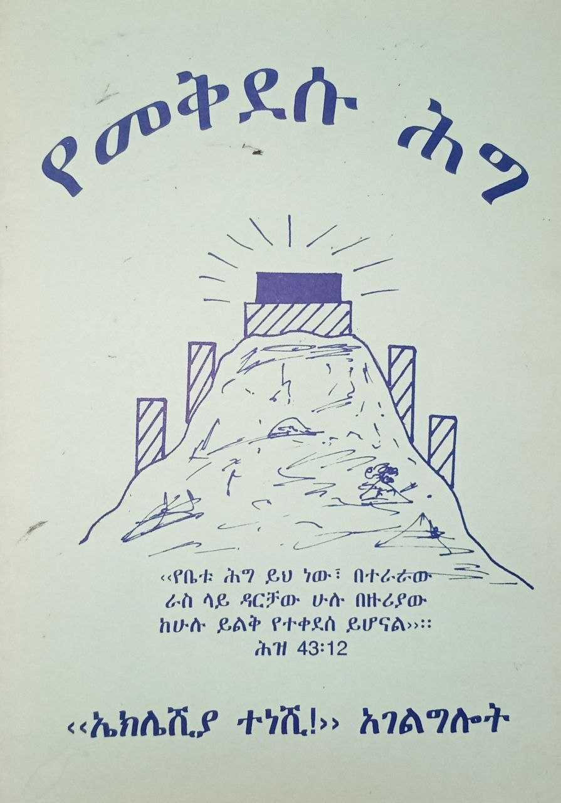
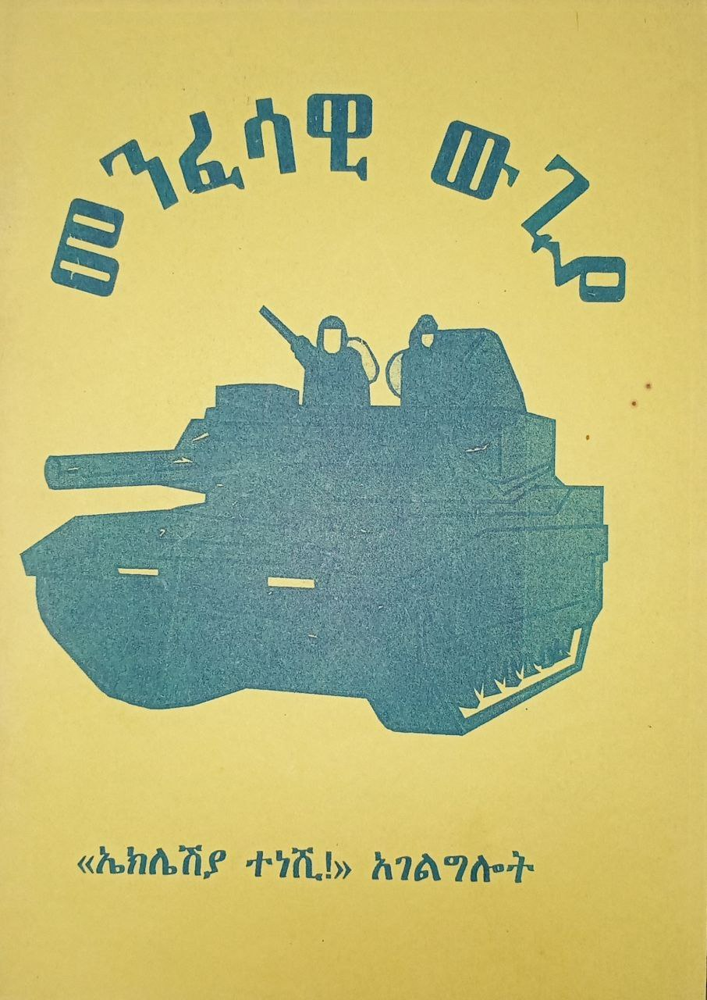
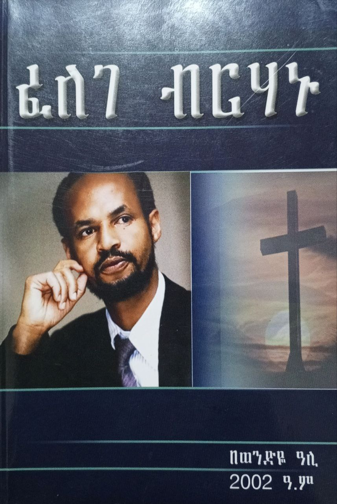
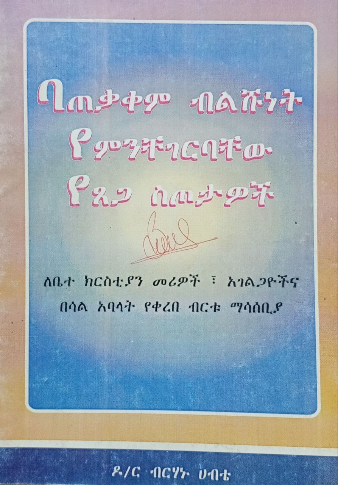
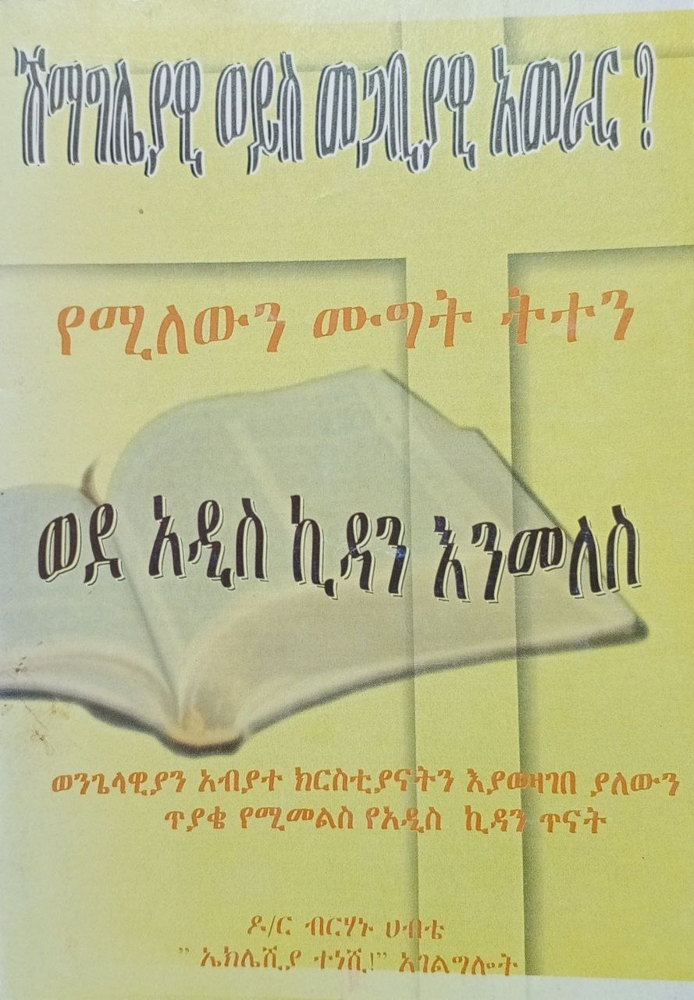
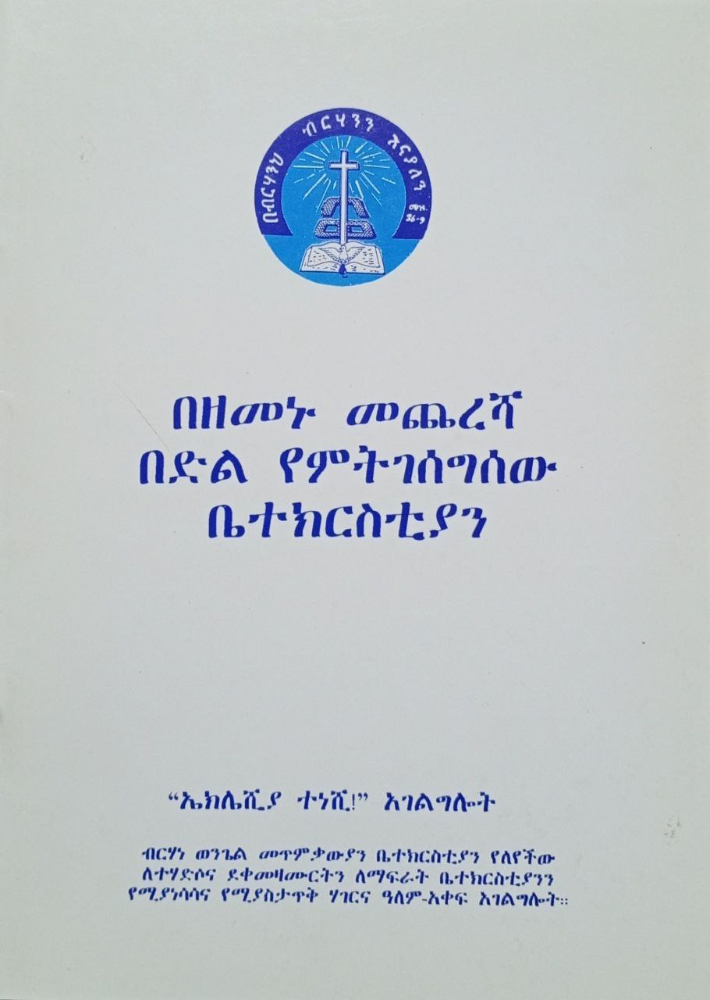
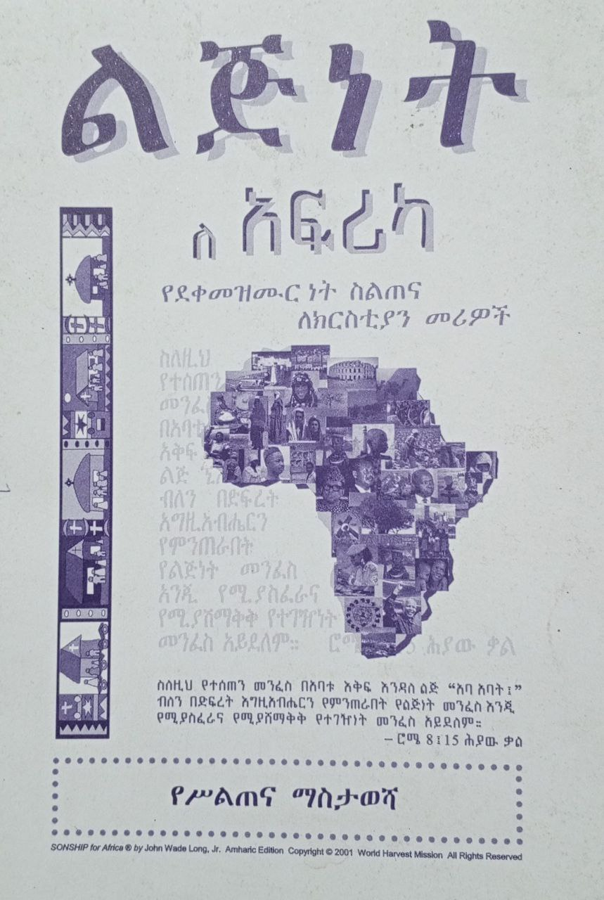

ራዕይVision
ምድር እግዚአብሔርን በማወቅ ተሞልታ የሰዎችም ሕይወት እግዚአብሔርን በመምሰል ተለውጦ ማየትThe earth filled with the knowledge of God, and lives transformed into His likeness.
ተልዕኮMission
ቤተክርስቲያን በማያቋርጥ ተሃድሶ ወንጌል መስበክን እና ደቀ መዛሙርት ማፍራትን በብቃት እንድትወጣ በማስተማርና በማሰልጠን ማስታጠቅEquipping the church through teaching and training to preach the gospel and make disciples effectively.
እሴቶችValues
በጸሎት መትጋት፣ በእግዚአብሔር ፍቅር መኖር፣ በመንፈስ ቅዱስ ኃይል መደገፍ፣ ለቃል አክብሮት እና ክርስቶስን መምሰልPrayer, love, Holy Spirit power, reverence for God's word, and Christlike living.
የአገልግሎቱ መሠረትOur Foundation
ዶ/ር ብርሃኑ ሐብቴ ጌታን ካገኙበት እለት ጀምሮ በመንፈሳዊ እድገታቸው የሚተጉ ሲሆን፣ በወጣትነት እድሜያቸው ትምህርታቸውን ከመከታተል ጎን ለጎን አብዛኛውን ጊዜያቸውን በአገልግሎት ያሳልፉ ነበር። ይህ ቃል ከፈለገ ብርሃኑ መጽሐፍ ገጽ 65 የተወሰደ ሲሆን፣ እግዚአብሔር ለባሪያው ስለ ተጠሩበት ጥሪ ፈንጠቅ ያደረገበት ዕለት ነው። Dr. Berhanu Habte was known for his spiritual growth from the day he encountered the Lord. In his youth, while pursuing his education, he dedicated most of his time to ministry. This quote, taken from page 65 of the book "Felege Berhanu," marks the day God first revealed his calling.
በሐምሌ 1983 ዶ/ር ብርሃኑ በቤተ ክርስቲያን ህቡዕ ዓመታት ባላቸው ሰፊ አገልግሎትና ዕውቅና ምክንያት ወደ እንግሊዝ ተጋብዘው በተጓዙበት ወቅት፣ የእግዚአብሔር ድምፅ እንዲህ ሲል መጥቶላቸዋል፡- “ውኃ ባህርን እንደሚከድን ምድር እግዚአብሔርን በማወቅ ትሞላለች” (ኢሳ 11፡9)። ይህም በ1964 ዓም የተቀበሉትን ራዕይ አጠናክሮታል። ከዚያ ወዲህም ሙሉ ጊዜያቸውን ለአገልግሎት ሰጥተው ከህክምና ሙያቸው ተላቀቁ። In July 1983, Dr. Berhanu was invited to an international gospel conference in England. While there, God spoke to him through Isaiah 11:9: "For the earth will be filled with the knowledge of the Lord as the waters cover the sea." This reaffirmed the vision he received in 1964. From that time on, he dedicated himself fully to ministry, leaving his medical profession.
ተጽዕኖ አጭር ቆጠራImpact Summary
የእኛ ምስሎችOur Gallery










የጢራኖስ የደቀ መዝሙር ትምህርት ቤትTyrannus Discipleship School
ጢራኖስ / Tyrannus
በሐዋሪያት ሥራ 19፡9 መሰረት እንደ ጳውሎስ የተወሰኑ ደቀ መዛሙርትን ለይቶ በጥልቀት የማስተማር ሂደት። ለ4 ሳምንታት የሚቆይ የአዳሪ ሥልጠና ሲሆን፣ እስካሁን 10 ዙር ተማሪዎችን አስመርቋል። Based on Acts 19:9, following Paul's example of separating disciples for deep teaching. A 4-week residential training program with 10 cohorts graduated so far.